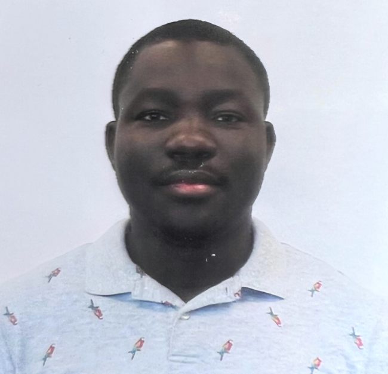

Accelerated irradiation simulations
Developing and applying the Iterative Kinetic Approach (IKA) to study radiation damage accumulation more efficiently than conventional cascade-based simulations.
Understanding materials degradation through atomistic simulations, multiscale modeling, and data-driven methods.
Ph.D. Candidate in Materials Science & Engineering
Research interests: radiation effects · defect kinetics · microstructure evolution · AI for materials

I am a Ph.D. candidate in Materials Science and Engineering at the University of Florida, working with Professors Simon R. Phillpot and Michael R. Tonks. My research investigates how irradiation creates and transforms defects in metallic materials and how these changes affect microstructure and properties.
I combine molecular dynamics, accelerated irradiation simulation methods, defect characterization, and free energy cluster dynamics to connect atomistic mechanisms with longer-term material behavior. I am also interested in applying machine learning to computational materials research.
Institution
University of Florida
Field
Materials Science & Engineering
Research focus
Radiation damage, defects, multiscale modeling
My work focuses on the evolution of irradiation-induced defects across length and time scales.
Developing and applying the Iterative Kinetic Approach (IKA) to study radiation damage accumulation more efficiently than conventional cascade-based simulations.
Investigating point-defect clustering, dislocation loops, stacking fault tetrahedra, and their roles in irradiation-induced microstructural changes.
Studying temperature-dependent defect recovery and changes in irradiated aluminum microstructures through molecular dynamics.
Modeling defect diffusion, recombination, clustering, and sink interactions to investigate longer-time defect kinetics in aluminum.
For my current peer-reviewed publications, citation metrics, and coauthor information, visit my Google Scholar profile.
Browse my publications and research contributions on Google Scholar.
View publications on Google Scholar ↗Selected publications can be added here later with verified titles, journal names, years, and DOI links.
My experience spans molecular dynamics (LAMMPS), Python and C++ scientific programming, high-performance computing, microstructure analysis, and multiscale modeling.
Download My CV ↗I welcome conversations and collaborations in computational materials science, radiation effects, and multiscale modeling.
I received the Best Graduate Research Poster Award at the annual research symposium organized by the Department of Materials Science and Engineering and the Nuclear Engineering Program, Herbert Wertheim College of Engineering, University of Florida.